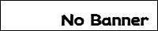
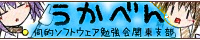

リンク集
SSPで使用するゴーストやシェル、外部プログラムを探すときに有用なサイトをいくつか紹介します。
利用に際しては、それぞれ利用規約などはきちんとお読みください。
もしもこのページによくでてくる「伺か」の語がなんだかピンとこない方は、用語説明へ。
各種追加データを探す
|
|
Ghost Town ／ Balloon Town |
| http://ghosttown.mikage.jp/ ／ http://ghosttown.mikage.jp/balloontown.html | |
| ゴーストとバルーンのデータベースです。 好みのゴーストやバルーンを探すならまずはここ。 |
|
| 噂と評判[改] | |
| http://review.sakura.ne.jp/ | |
| ゴーストのレビューサイトです。 ゴーストのユーザの声を聞いたり、感想を投稿してみましょう。 |
|
|  | SoSiReMi |
| https://sosiremi.appspot.com/ | |
| 伺か関係の追加データのアップローダです。 ネットワーク更新にも対応。 |
|
| うかろだ。2nd | |
| http://be-sp.com/colorbox/cgi-bin/ghost_nar/ | |
| 伺か関係の追加データのアップローダです。 |
|
いろいろな最新情報を追いかける
| SiReFaSo | |
| https://sirefaso.appspot.com/ | |
| 伺か関係コンテンツの更新情報収拾サイトです。 ゴースト、シェル、バルーンなど、ネットワーク更新に対応している追加データについて、更新を検知して表示してくれます。 |
|
| |
Disc-2 |
| http://disc2.s56.xrea.com/ | |
| 伺か情報ポータルサイトです。 投稿ニュースの他、伺か（SSP）の導入案内や、不特定多数が編集できるリンク集などがあります。 |
|
| 霊界通信 | |
| http://ghost-log.sakuratan.com/ | |
| 伺か関係の出来事を記録しているサイトです。 用語解説やツール紹介、開催中イベントのまとめなどもあります。 |
|
| 何か。の略歴 | |
| http://www5f.biglobe.ne.jp/~nobml/sakura/ | |
| 伺か関係アプリケーション、ツールの更新情報まとめサイトです。 長いゴーストの歴史を記録し続ける貴重な資料となっています。 |
|
コミュニティなど
| うかちゃ | |
| http://ukgkchat.saloon.jp/ | |
| 伺か関係でチャットしたい人向け。 最近はtwitterのおかげかすっかり過疎という話も……。 |
|
|
|
Twitter ハッシュタグ「#ukagaka」「#伺か」 |
| https://twitter.com/hashtag/ukagaka ／ https://twitter.com/hashtag/伺か | |
| 利用はゴーストなどの製作者側がほとんどですが、伺か関係の活動状況がなんとなくわかります。 | |
| 回覧板2nd | |
| http://www3.atchs.jp/kairanban/ | |
| 雑談用掲示板です。 主に個々のゴーストについてのファンがそれぞれのスレッドに集って語らう場所です。 |
|
| もどき板 | |
| http://uka.jpn.org/ | |
| 伺か関係の総合掲示板です。 雑談用の「さくら＠もどき」、開発質問等の真面目な話題を扱う「うにゅう＠もどき」、イベント時に利用するためのスペースである「祭り＠もどき」の3つの掲示板があります。 |
|
|
 |
伺的ソフトウェア勉強会 |
| http://study.shillest.net/ | |
| 勉強会もやってます。 | |